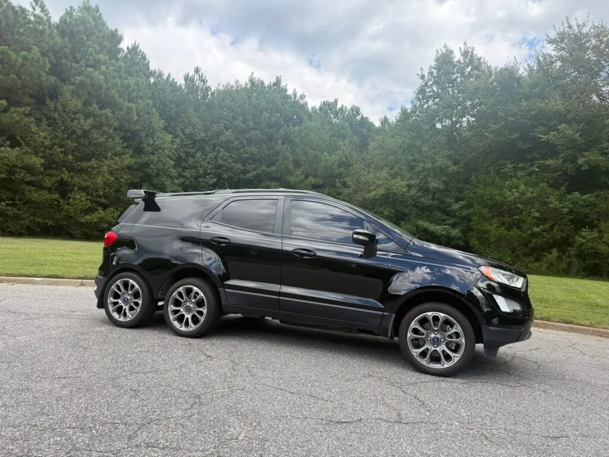
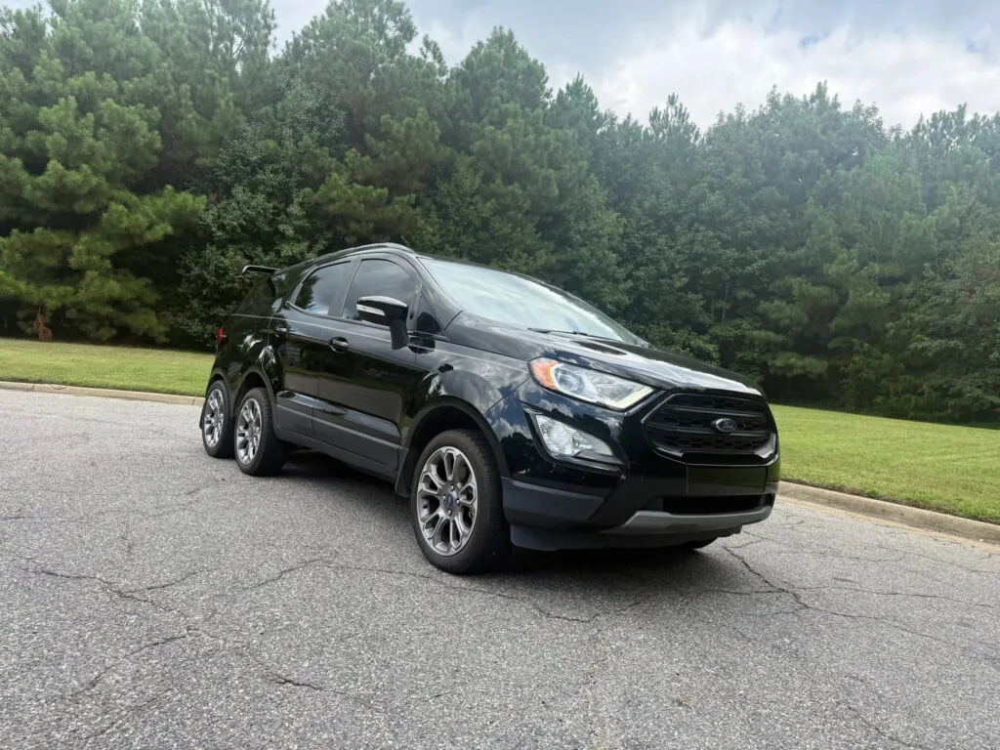
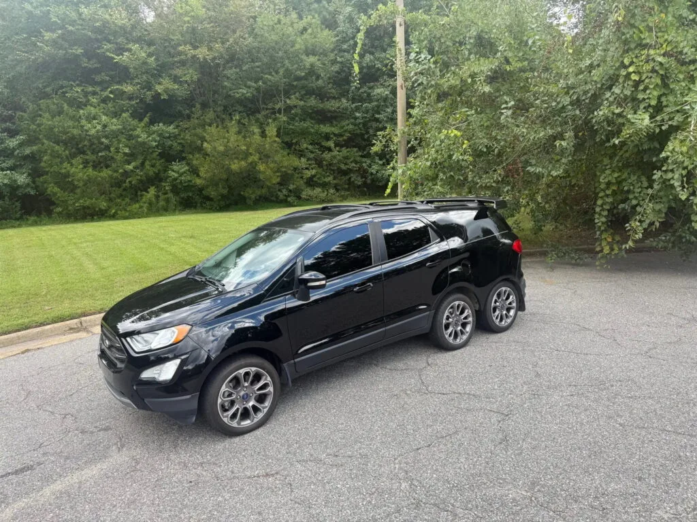
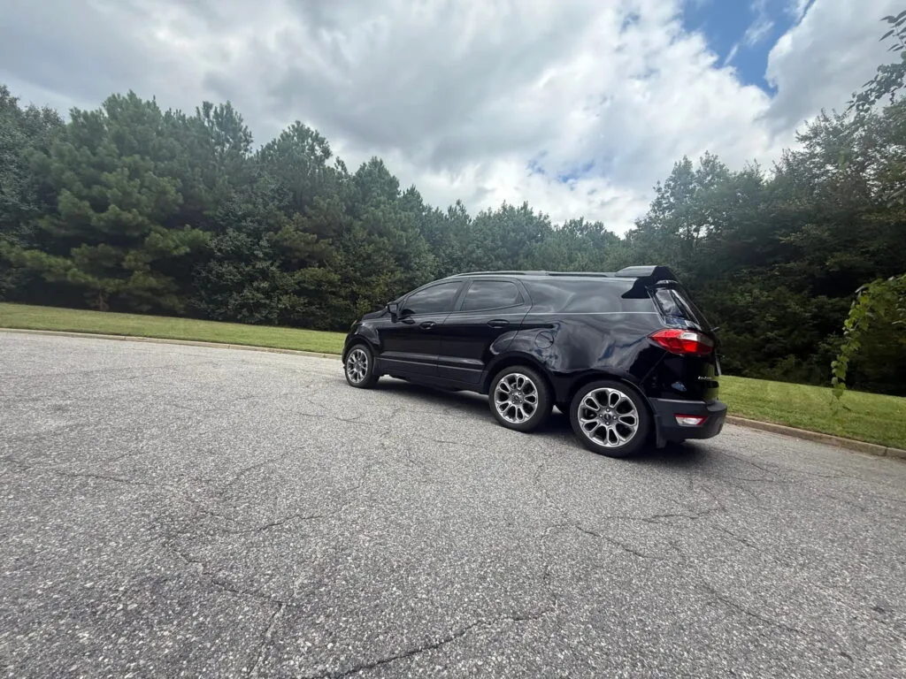
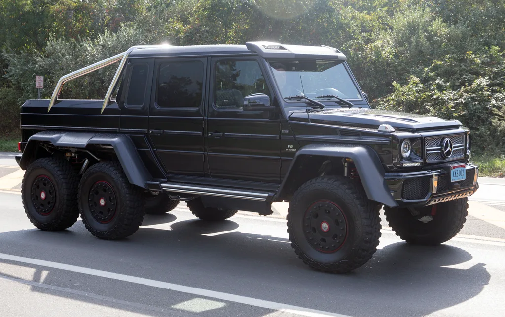

▲ 미국 미시간의 튜닝숍 킨케이드 커스텀 카스가 개조한 6륜 포드 에코스포트. 뒷문 뒤에 차체와 서브프레임을 통째로 추가해 바퀴를 하나 더 달았다 ⓒ Carscoops
바퀴가 4개도 아니고 6개. 그것도 트럭이 아니라 국내에서도 익숙한 소형 SUV 포드 에코스포트 이야기다.
미국 자동차 매체 Carscoops는 최근 온라인 경매 사이트 브링어트레일러(Bring a Trailer)에 다시 매물로 올라온 6륜 개조 포드 에코스포트를 소개하며 "의문스러운 결정들의 기념비(A Monument To Questionable Decisions)"라는 표현을 썼다. 겉보기엔 합성 사진처럼 보이지만, 실제로 도로를 달리는 등록 차량이다. 대체 누가, 왜 이런 차를 만들었을까.
1. 정체는 '움직이는 광고판' — 킨케이드 커스텀 카스의 작품
이 괴상한 차를 만든 곳은 미시간주 어블리(Ubly)에 위치한 튜닝숍 '킨케이드 커스텀 카스(Kincaid Kustom Kars)'. 전기 설비 업체 킨케이드 일렉트릭의 자매 회사로, 대표 콘래드 킨케이드가 직접 이 차를 제작했다. 목적은 단순했다. 지역 소상공인들의 광고를 붙이고 다니는 '구르는 광고판(billboard buggy)'을 만드는 것이었다.
실제로 개조 초기에는 차체 옆면의 추가된 패널에 지역 그래픽 디자이너와 부동산 중개업체의 광고가, 뒷유리에는 베이커리와 파워워싱(고압 세척) 업체 광고가, 테일게이트에는 모회사인 킨케이드 일렉트릭의 광고가 붙어 있었다. 창문이 없는 밋밋한 측면 패널과 늘어난 화물 공간도 이런 광고판 용도에 맞춰진 결과물이다.
📍 왜 하필 에코스포트였나
정확한 선정 이유는 공개되지 않았지만, 에코스포트는 소형차 치고 차체가 높고 박스형에 가까운 실루엣을 갖고 있어 옆면에 넓은 광고 패널을 붙이기 유리했을 것으로 보인다. 여기에 측면 힌지식(옆으로 열리는) 테일게이트 구조를 그대로 살리면서 뒤쪽에 화물 공간을 늘리기도 상대적으로 수월했다.

▲ 정면에서 보면 일반 에코스포트와 다를 게 없지만, 뒤로 갈수록 늘어난 차체와 추가된 차축이 드러난다 ⓒ Carscoops
2. 어떻게 바퀴를 하나 더 달았나 — 차체 통째로 절단·연장
단순히 바퀴만 더 끼운 게 아니다. Carscoops에 따르면 킨케이드는 뒷문 뒤쪽 차체를 절단하고, 그 사이에 별도의 차체 섹션과 서브프레임을 통째로 끼워 넣은 뒤, 원래 있던 리어 엔드(뒷부분)를 가장 뒤쪽 서브프레임으로 옮기고, 생긴 빈틈은 직접 제작한 패널로 메웠다. 차체를 늘리는 이른바 '스트레치(stretch)' 개조에, 차축 하나를 통째로 이식하는 작업이 더해진 셈이다.
| 항목 | 내용 |
|---|---|
| 베이스 | 2019년형 포드 에코스포트 티타늄 |
| 차체 작업 | 뒷문 뒤 차체 절단 후 서브프레임 통째로 삽입, 필러 패널 자체 제작 |
| 차축 구성 | 3개 차축(앞 1 + 중간 1 + 뒤 1), 6개 바퀴 모두 17인치 휠로 통일 |
| 구동 방식 | 앞·중간 차축 구동, 맨 뒤 차축은 조향·구동 없이 따라가는 트레일링 방식 |
| 타이어 | 파이어스톤 웨더그립(Firestone WeatherGrip) |
| 기타 | 루프 마운트 리어 스포일러 추가, 전체 무광 검정 도색 |
즉 6개의 바퀴 중 실제로 동력을 받는 건 4개뿐이고, 나머지 한 쌍은 하중을 나눠 받으며 따라가는 구조다. 트럭에서 흔히 보는 '태그 액슬(tag axle)'과 비슷한 개념을 소형 크로스오버에 그대로 옮겨 붙인 셈이다.

▲ 위에서 보면 뒷문 뒤로 차체가 얼마나 길게 늘어났는지 잘 드러난다. 늘어난 공간만큼 화물 적재량도 늘었다 ⓒ Carscoops
3. 파워트레인은 그대로 — 166마력 엔진으로 늘어난 차체를 감당
엔진은 손대지 않았다. 순정 그대로인 자연흡기 2.0L 4기통 엔진(166마력, 최대토크 149lb-ft·약 20.6kg·m)이 6단 셀렉트시프트 자동변속기와 사륜구동 시스템을 통해 앞·중간 차축을 굴린다. 문제는 늘어난 차체 길이와 무게, 그리고 나란히 붙은 6개의 바퀴가 만드는 공기저항이다.
✅ 연비, 그리고 예상 가능한 대가
· 계기판에 표시된 연비는 약 5.6mpg(L당 약 2.4km) 수준으로 알려졌다
· 순정 에코스포트 AWD 모델의 공인 복합연비가 갤런당 20mpg대 중반인 것과 비교하면 4분의 1 수준까지 떨어진 셈
· 늘어난 차체 무게, 커진 회전 저항, 애초에 광고판 용도로 설계된 밋밋한 측면 패널의 공기역학적 손해가 겹친 결과로 추정된다
주행거리는 약 47,000마일(약 7만 5,600km) 수준으로 전해진다. 동력계 자체는 특별할 것이 없지만, 차축 하나를 더 감당해야 하는 구조 특성상 실제 주행 안정성과 내구성에 대한 의문은 자연스럽게 따라붙는다.
▲ 순정 부품인 루프 레일과 헤드램프는 그대로 남아 있어, 늘어난 차체와의 이질감이 더 도드라진다 ⓒ Carscoops
4. 몇 번이나 팔렸나 — 복잡한 판매·타이틀 이력
이 차는 이번이 처음 경매에 나온 게 아니다. 세일비지 타이틀의 발단은 2019년 11월, 당시 소유주가 다른 차를 추돌하면서 앞부분이 손상된 사고였다. 미시간주가 세일비지(salvage, 손상 처리) 타이틀을 발급했고, 이후 검사를 거쳐 리빌트(rebuilt, 수리 후 재등록) 타이틀로 전환됐다. 이 타이틀 이력은 이후 손바뀜 과정에서도 계속 따라붙었는데, 한때는 몬태나주 명의 등록('몬태나 타이틀 루프홀')을 거치기도 한 것으로 The Autopian은 전했다.
| 시점 | 내용 |
|---|---|
| 2023년 | 개인 판매 희망가 16,500달러(약 2,300만원)로 제시 |
| 2024년 10월 | 미컴(Mecum) 인디애나폴리스 경매에서 9,350달러(약 1,300만원)에 낙찰 |
| 2025년 | 현재 판매자가 차량 인수, 타이틀 재발급. 이후 약 500마일(약 800km)만 추가 주행 |
| 2026년 9월 | 브링어트레일러(버지니아비치 소재)에 노 리저브로 재매물, 경매 마감일(9월 19일) 기준 입찰가 7,000달러(약 970만원) 이상까지 진행 |
경매 진행 상황은 브링어트레일러 공식 페이지에서 직접 확인할 수 있다. Carscoops 원문 기사 바로가기

▲ 낮은 각도에서 보면 세 번째 차축이 얼마나 튀어나와 있는지 뚜렷하게 드러난다 ⓒ Carscoops
5. 6륜차, 사실 이번이 처음은 아니다
바퀴 6개짜리 차 자체는 자동차 역사에서 낯선 소재가 아니다. 다만 대부분은 이번 에코스포트처럼 '농담'에 가까운 개인 튜닝이 아니라, 오프로드 성능이나 하중 분산을 노린 정식 프로젝트였다는 차이가 있다.

▲ 정식 양산된 6륜 오프로더의 대표격인 메르세데스-벤츠 G63 AMG 6x6. 에코스포트와 달리 애초부터 6륜구동 오프로드 주행을 위해 설계됐다 ⓒ Wikimedia Commons (Mr.choppers, CC BY-SA 3.0)
| 차량 | 성격 |
|---|---|
| 메르세데스-벤츠 G63 AMG 6x6 | 브라부스가 제작 지원한 6륜구동 오프로드 완성차, 소량 정식 생산 |
| 헤네시 벨로시랩터 6x6 | 포드 F-150 랩터 기반 6륜 개조 튜닝카, 미국 헤네시 퍼포먼스 엔지니어링 제작 |
| 코바트 6x6(옛 6x6 컨버전 업체들) | 픽업트럭 기반 오프로드용 6륜 개조, 주로 적재량·접지력 향상 목적 |
| 이번 에코스포트 6x6 | 성능·오프로드 목적이 아닌 순수 광고판·재미 목적의 개인 튜닝 |
공통점은 차축을 하나 더 붙이는 구조 자체가 절대 간단하지 않다는 점이다. 프레임 보강, 서브프레임 제작, 구동계·배기 라인 재배치까지 손이 많이 가는 작업이라 전문 튜닝숍이 아니면 시도하기 어렵다. 그런 점에서 이번 에코스포트는 '픽업트럭이나 오프로더가 아닌 소형 크로스오버에, 성능이 아닌 광고를 목적으로' 6륜 구조를 적용한 상당히 이례적인 사례로 꼽힌다.
6. 요약
미국 미시간의 튜닝숍 킨케이드 커스텀 카스가 2019년형 포드 에코스포트 티타늄을 바탕으로 만든 6륜 개조차가 브링어트레일러 경매에 다시 등장했다. 애초 목적은 성능이 아니라 지역 소상공인 광고를 싣고 다니는 '구르는 광고판'이었다.
뒷문 뒤에 차체 섹션과 서브프레임을 통째로 끼워 넣어 차축과 바퀴 한 쌍을 추가했고, 순정 166마력 엔진과 변속기는 그대로 남겨뒀다. 그 결과 계기판 기준 연비는 5.6mpg까지 떨어졌고, 세일비지·리빌트 타이틀을 거치며 여러 차례 손바뀜을 겪었다.
메르세데스 G63 AMG 6x6나 헤네시 벨로시랩터 6x6처럼 오프로드 성능을 노린 정식 6륜차와 달리, 이번 에코스포트는 순수하게 튜닝숍의 아이디어와 광고 수요에서 출발한 '기행에 가까운' 개조차라는 점에서 눈길을 끈다.